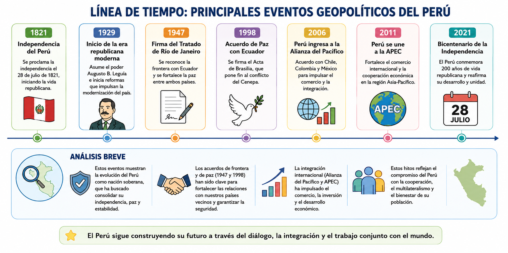
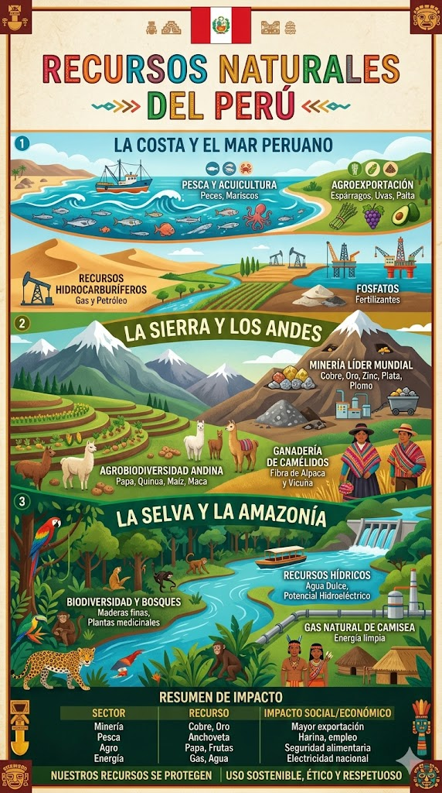
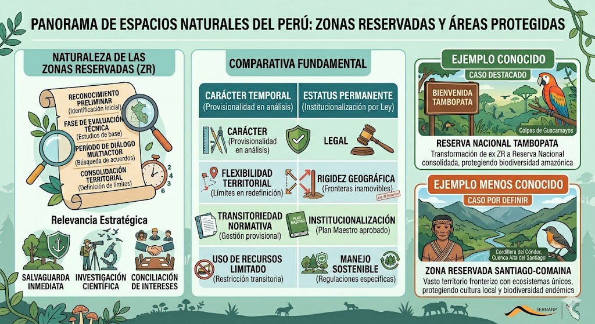
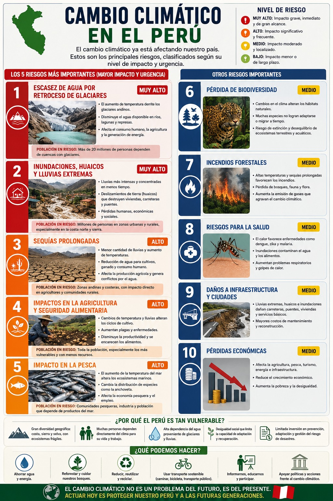
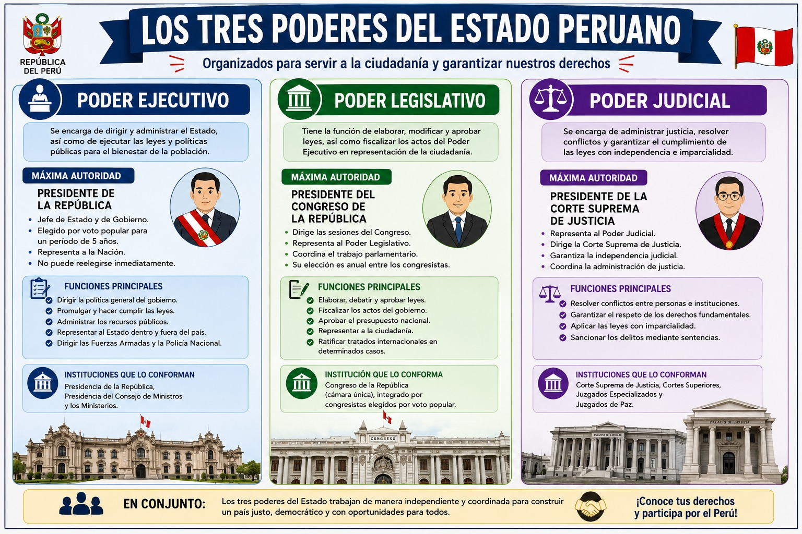
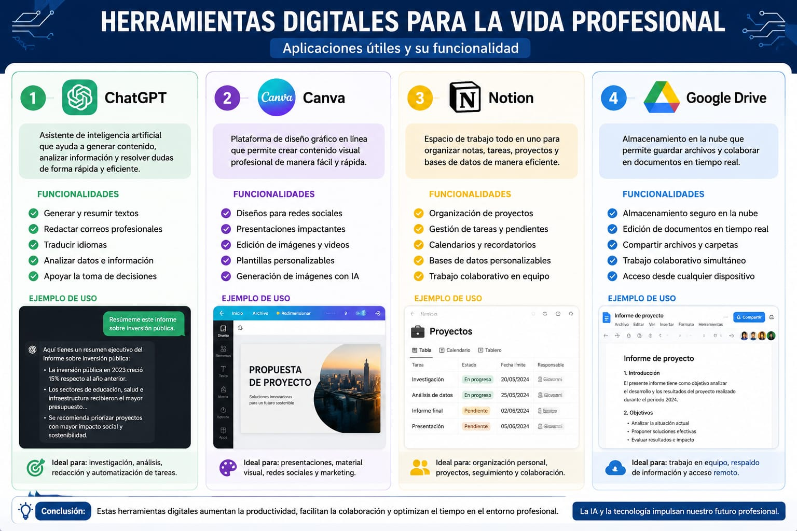
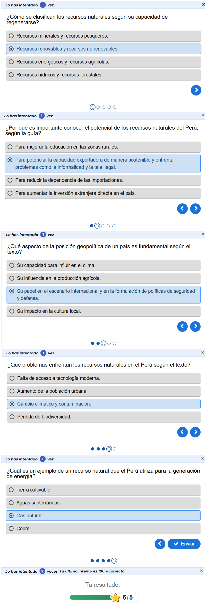
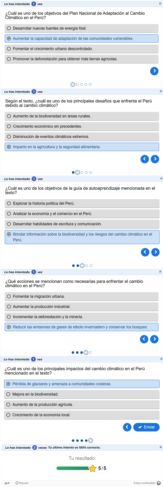

Blog Académico - Semanas 1 y 2
Integrantes:






La minería ilegal constituye uno de los principales problemas socioambientales del Perú. A diferencia de la minería informal, esta actividad opera en áreas estrictamente prohibidas y utiliza métodos empíricos con insumos altamente tóxicos.
La minería ilegal en la región de Loreto opera principalmente de forma fluvial mediante el uso de embarcaciones adaptadas conocidas como "dragas", afectando ríos críticos como el Nanay, Napo y Atacuari. Esta problemática es impulsada por organizaciones criminales que aprovechan la escasez de oportunidades laborales, el alto precio del oro y la débil presencia del Estado.
Para frenar esta expansión, el diagnóstico concluye que es indispensable implementar una estrategia integral que combine una fiscalización estatal efectiva, el fortalecimiento de las instituciones y la creación de alternativas económicas sostenibles para las poblaciones afectadas.
Evidencias de revisión y resolución de los cuestionarios:

